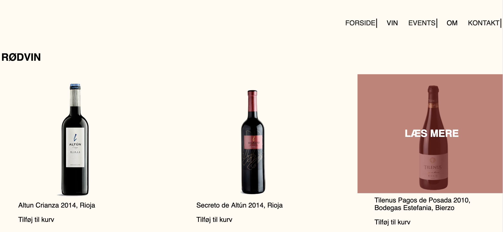

Content
- Indhold, kunder og Premiere Pro -
Værktøjer benyttet til dette tema:
Redesign og video
I denne opgave skulle vi selv ud og finde en virksomhed, som ville have redesignet, deres hjemmeside og få lavet en virksomhedsvideo.
Vi valgte vin firmaet SOLA vine, som er en lille privat vinhandel. Firmaet drives af et par, der har stor interesse inde for vin. Deres hjemmeside var ikke blevet opdateret siden, de overtog den fra en af deres venner tilbage i 2013. Derfor var der mange ting, der skulle redesiges. Hvilket gjorde, at vi valgte kun at redesigne nogle af siderne på hjemmesiden. Vi to billederne ind i photoshop og lagde ny bagrund op, gjorde information mere tilgængelig og lagde hover effekt på de vin man kørte musen hen over. Vi ville gøre brugergrænsefladen mere overskuelig end førhen.
I vores BERT-test var det meget tydeligt, at farverne og skriften ikke var særlig appellerende, hvilket vi var meget enige i. Derfor skulle farverne skiftes ud med nogle mere naturlige farver. Da vi var en smule tidspresset, blev vi ikke 100% færdige med redesignet, men ideen omkring en redesignet hjemmeside var tydelig. Vi havde lidt udfordringer med videoen, fordi der ikke SOLA vine repræsentanterne ikke var særlig spændende. Da vi kom hjem fandt vi også ud af vi ikke havde særlig mange b-rolls, men vi fik det til at fungere nogenlunde.